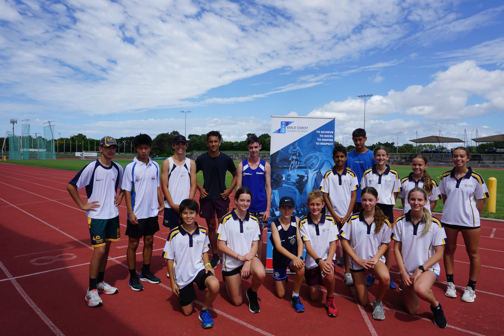

Legacy Sports Academy was founded with a steadfast vision to create a dynamic platform where aspiring athletes could find opportunities to excel and thrive. Over the years, what began as a modest gathering of passionate sports enthusiasts has blossomed into a comprehensive, fully-equipped academy. Today, we proudly support players from a wide spectrum of backgrounds, fostering inclusivity and empowerment.
Guided by a commitment to excellence, Legacy Sports Academy has become a beacon for young talent seeking to unlock their potential. Our journey is marked by unwavering dedication to nurturing athletic skills, promoting sportsmanship, and instilling confidence in every individual who walks through our doors. With every milestone achieved, we reaffirm our goal of shaping not only accomplished athletes but also individuals with integrity and resilience.
Whether on the playing field or in the realm of community building, Legacy Sports Academy continues to stand as a source of inspiration, opening doors to dreams and creating a legacy of excellence.
